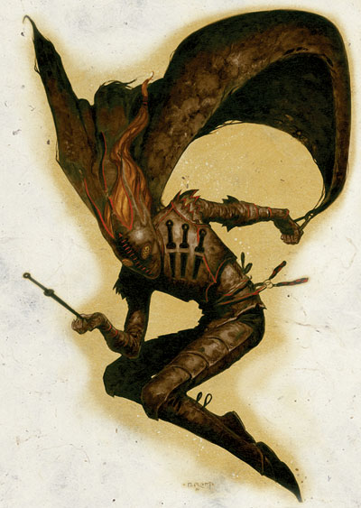

资料来源：费伦大陆信仰与神系介绍 Faiths & Pantheons
麦斯克 Mask （盗贼之神）
费伦神系 弱等神力

别称：众贼之主 Master of All Thieves，阴影之王 Lord of Shadows
圣徽： 黑色的丝绸面具

居住界域：影界 Plane of Shadow
阵营：中立邪恶 NE
神职：阴影 shadows，偷窃 thievery，盗贼 thieves
信徒：刺客，乞丐，罪犯，盗贼，黯影，影舞者
牧师阵营：守序邪恶 LE，中立邪恶 NE，混乱邪恶 CE
神域：黑暗 Darkness，邪恶 Evil，幸运 Luck，诡术 Trickery
喜好武器：秘密低语者 Stealthwhisper（长剑 longsword）
麦斯克是个充满自信且心机深沉的神祇，祂爱好策划各种各样的秘密阴谋－虽然祂的计划总是让自己陷入危险的境地。阴影之王既机警又冷酷，祂从来不曾情绪失控，且说话时总是隐含讥讽与嘲弄。麦斯克的外表总是变幻不停，因而从来没有任何人知道祂的真正面目。
许多人都惧怕麦斯克的教会，不仅只是因为其传闻中的残酷，也是因为其对于偷窃与在阴影中潜伏的嗜好。大部分的圈外人都认为麦斯克的教会只不过是个打着宗教名义组织起来的盗贼工会（这的确是十分精确的描述）。由于麦斯克教会对阴谋十分偏好，因而在政治圈中的声望一向不佳，有许多机警的观察员也提出警告，认为此教会时常受雇为间谍网络的一环。
麦斯克的牧师于夜晚之时在黑暗或阴影之中祈祷以获得神术。所有较具规模的神殿每个月都至少会举行一次名为「隐形者之赞颂」（the Ritual of the Unseen Presence）的仪式赞扬麦斯克对所有事物的详加探查（不管目标多么隐蔽）。此一是包含了吟唱圣歌、颂念赞美诗、以及捐献财富。一般的信徒也都会参与每日例行的日落祈祷，在仪式中他们围绕着神殿中央的祭坛跪下祈祷，然后捐献钱币。为了宣扬麦斯克的辛辣幽默感（祂时常故意对调高位与低位），资深的牧师会赠送钱币给予年轻的牧师，而最高阶的祭司也会赠送钱币给予最低阶的祭司。麦斯克的牧师时常兼职刺客、吟游诗人、神力寻者、工会盗贼、一般盗贼、阴影法师、以及影舞者。
历史／与众神的关系 History／Relationship：
麦斯克对阴谋与偷窃的嗜好不仅使祂失去了许多（原本有可能缔结的）盟友，也使祂损失许多力量。在动荡之年中，阴影之王将自己伪装成弒神剑 Godsbane，而当时仍是凡人的希瑞克用这把剑杀死了谋杀之神巴尔。之后，祂又将幻影女神莱拉出卖给希瑞克，让暗日夺得「幻影」神职。但当麦斯克阅读了「希瑞经」之后，祂反而被自己策划的复杂阴谋反噬，这项错误几乎毁了祂（也让希瑞克夺走「阴谋」神职）。更糟的是，阴影之王惹上了浑沌魔犬科泽夫 Kezef，一个强大的异界生命体。虽然当麦斯克得到「弒犬剑」Houndsbane（由蜜丝特拉制造的强大魔法武器）之后，祂得以暂时不受魔犬的威胁。然而，如果麦斯克失去了这把剑，那科泽夫就会立刻重新开始牠的猎杀。
麦斯克已向重生的班恩提议让双方结为盟友，但黑暗之王（the Black Lord）非常了解麦斯克的天性与本质，因而仍对众贼之主保持戒心。麦斯克十分痛恨抢走祂神职的希瑞克，无时不刻都在策划着要夺回原本属于祂的东西。但非常讽刺的，莎儿女神也正计划着要夺走麦斯克的「阴影」神职，因此也虎视眈眈的注意麦斯克的一举一动。由于本质上的完全对立，麦斯克因而与渥金（Waukeen，商业女神）以及海姆（Helm，守护之神）成为死敌，不过尚有许多神祇－比如德奈尔（Deneir，艺术之神）、欧格马（Oghma，知识之神）、托姆（Torm，忠诚之神）、提尔（Tyr，正义之神）、以及苏伦（Selune，月之女神）也都努力地破坏麦斯克的阴谋。
教义 Dogma：
一切阴影覆盖之处皆受麦斯克掌管。只有当你占有某物之时，才是真正占有该物，因此真正拥有这个世界的是那些有迅捷身手、如簧之舌、以及灵巧手指的人。随时保持秘密与谨慎，这不仅是种美德，也是能够让你圆滑地偷天换日的技巧。财富只属于有能力获取它的人，此乃绝对真理。每一天都要努力「增加」属于自己的财富，但亦应谨记只对最有价值的目标下手，切忌不加挑选而「来者不拒」。虽然只有傻瓜才会对人诚实，但也要明白表面上的诚实也是种有利的伪装。要让所有的都相信你说出的「事实」，但是记住，当说出真正的事实反而更能混淆对方之时则绝对不可说谎。精明与狡诈最为重要。在幕后操纵剩于直接在台面上发号施令（如此有助于让他们相信自己是单纯「靠自己」而作成某事）。除非对隐匿有所助益，否则千万不可明目张胆的行动。待在阴影的保护下，光明正大的行动只会让你变成明显的标靶。
牧师与神殿 Clergy & Temples：
麦斯克教会的负有程度仅次于渥金教会。众多的牧师为教会「累积」了数不尽的财富，并将之藏匿于许多秘密地点。麦斯克的牧师并不会像矮人那样为了满足贪婪而囤积财富；他们活用这些财富－比如雇用眼线、打通门路的行贿、篡改合约、以及操纵平民。牧师们躲在幕后依照他们的企图调整情势（虽然有可能比直接现身在台面操纵耗费更多资源，才能完美的操纵局势而不让外界发现有幕后黑手存在）。这些老练的骗徒们如此做的原因都是为了让痴愚易受骗的平民认为麦斯克已死，而祂的教会也已衰微分裂。
麦斯克牧师的日常生活，通常就是策划或执行阴谋，以及对盗贼个体户与工会提供援助（并向其收取规费）。各地神殿对于独行的盗贼都有不同的处理方法－有的在提供协助的同时暗中知会当地工会；有的直接拒绝给予协助并通知当地工会；也有的神殿会帮助所有能缴纳「适当数量」献金的盗贼而不通知工会。牧师与信徒们努力地维持隐密状态，有时也会在当地工会的地底建造秘密祭坛以提供服务。如果该地区只有单一个强大的工会（比如安姆地区的影贼工会），则当地的神殿通常会藉由下水道或地底密道与该公会的大厅相连。如果在有数个工会互相竞争的大城市中，则当地的神殿便会保持中立，不偏颇任何一方。麦斯克神殿的中央祭坛都是由厚重的石块建成，其上覆有由天鹅绒、毛皮、或是丝绸制成的黑色面具，或是由贵重宝石拼成的镶嵌图像。
麦斯克教会的祭仪服装是色彩鲜艳的短袍与长裤。此种华贵的短袍有着膨胀如滚筒般的袖子与袖口，且还有明亮的镶边以展示教会的财富，同时还有一件附有兜帽的长披风，可在必要时遮蔽身上的色彩。当然，祭服的标准配备还包括一副步制的黑色面具。在某些麦斯克信仰较不昌圣（当地神殿处境也因而较为艰苦）的地区，信徒们在祭典中至少也会穿戴灰色长披风与黑色面具以象征麦斯克的眷顾。在神殿内部时，信徒们通常都只会戴着黑纱制成的面具（毫无疑问地，这无法隐匿面容与身分）；但当有事出外时，他们便会戴上可遮盖大部分脸孔的厚沉羊毛制或绸制面具（必要时甚至可以遮住全部面孔）。
自古以来，麦斯克的教会就是由各个独立的基地、神殿、以及地区组织所组成的松散网络。虽然近年来其本质并无多大变化，但近几年来的逆境（麦斯克的神格下降）已促使各地区的领导人彼此之间更加密切的合作。因此，麦斯克教会筹划了更多有利于己的阴谋。这种改变也已挽回了麦斯克教会在希瑞克教会影响之下所呈现的颓势（至少目前是如此）。
麦斯克的化身 Mask's Avatar
麦斯克化身的典型形象是一位体态纤瘦的人类男子，穿着柔软的灰色皮甲、镶红边的黑色面具、以及深黑色的斗篷。祂有时也会以语调柔和的人类女性形象现身，有着微微发光的苍白肌肤、像星辰般耀眼的双朣、以及拖曳至地的乌黑长发。当麦斯克用后者形象现身时，她总是赤脚行走，且全身隐匿于阴影中若隐若现。当于公开场合现身时，祂的外型总是变换不停－人类、半身人、矮人；男性或女性；各种年龄、身型、以及力量。在许多异界旅行者与麦斯克的牧师中都流传着有人遇上疑似这位神祇的故事。这些人都无法确定那个人真的是麦斯克，或者如该人所自称的，只是名为伯尔史东˙铁拳（Burlstone Ironfist）的矮人。不论采用何种型态，麦斯克行走时都绝对不会制造任何收声响与踪迹。
在「希瑞经」事件之前，麦斯克的一个化身一直伪装成玫瑰红的弒神剑潜伏在希瑞克身旁，但当谎言之王折断这把剑而毁去这个化身之后，便在有没有任何迹象显示出麦斯克采用类似的伪装。传说麦斯克拥有举世无双的优雅与敏捷，祂可以在滞空状态中轻易地投掷武器、越过深谷、穿过狭窄的窗户、抓住细微的支撑点、并可以在半空中作出极为精巧复杂的系列动作。阴影之王总是十分机警小心（到了偏执的程度，不停的侦查刺探自己的仇敌与信徒），也从来不曾失却耐性。祂说话的语调总是十分平和却又暗含讥讽，每句话都隐藏着辛辣的讽刺与幽默。